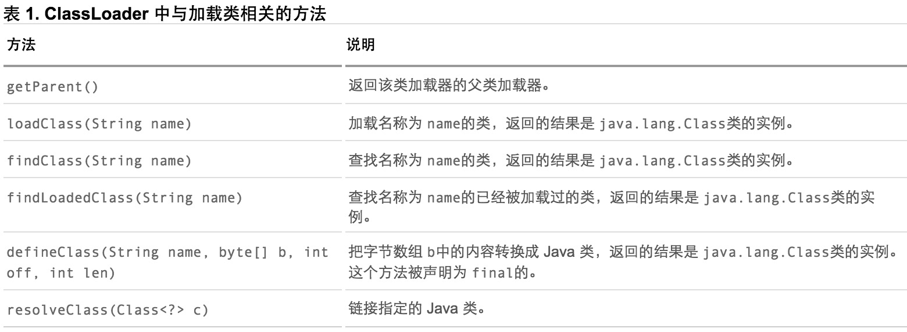

深入探讨 Java 类加载器
来源:www.ibm.com
类加载器（class loader）是 Java™中的一个很重要的概念。类加载器负责加载 Java 类的字节代码到 Java 虚拟机中。本文首先详细介绍了 Java 类加载器的基本概念，包括代理模式、加载类的具体过程和线程上下文类加载器等，接着介绍如何开发自己的类加载器，最后介绍了类加载器在 Web 容器和 OSGi™中的应用。
类加载器是 Java 语言的一个创新，也是 Java 语言流行的重要原因之一。它使得 Java 类可以被动态加载到 Java 虚拟机中并执行。类加载器从 JDK 1.0 就出现了，最初是为了满足 Java Applet 的需要而开发出来的。Java Applet 需要从远程下载 Java 类文件到浏览器中并执行。现在类加载器在 Web 容器和 OSGi 中得到了广泛的使用。一般来说，Java 应用的开发人员不需要直接同类加载器进行交互。Java 虚拟机默认的行为就已经足够满足大多数情况的需求了。不过如果遇到了需要与类加载器进行交互的情况，而对类加载器的机制又不是很了解的话，就很容易花大量的时间去调试 ClassNotFoundException和 NoClassDefFoundError等异常。本文将详细介绍 Java 的类加载器，帮助读者深刻理解 Java 语言中的这个重要概念。下面首先介绍一些相关的基本概念。
类加载器基本概念
顾名思义，类加载器（class loader）用来加载 Java 类到 Java 虚拟机中。一般来说，Java 虚拟机使用 Java 类的方式如下：Java 源程序（.java 文件）在经过 Java 编译器编译之后就被转换成 Java 字节代码（.class 文件）。类加载器负责读取 Java 字节代码，并转换成 java.lang.Class类的一个实例。每个这样的实例用来表示一个 Java 类。通过此实例的 newInstance()方法就可以创建出该类的一个对象。实际的情况可能更加复杂，比如 Java 字节代码可能是通过工具动态生成的，也可能是通过网络下载的。
基本上所有的类加载器都是 java.lang.ClassLoader类的一个实例。下面详细介绍这个 Java 类。
java.lang.ClassLoader类介绍
java.lang.ClassLoader类的基本职责就是根据一个指定的类的名称，找到或者生成其对应的字节代码，然后从这些字节代码中定义出一个 Java 类，即 java.lang.Class类的一个实例。除此之外，ClassLoader还负责加载 Java 应用所需的资源，如图像文件和配置文件等。不过本文只讨论其加载类的功能。为了完成加载类的这个职责，ClassLoader提供了一系列的方法，比较重要的方法如 表 1所示。关于这些方法的细节会在下面进行介绍。

对于 表 1中给出的方法，表示类名称的 name参数的值是类的二进制名称。需要注意的是内部类的表示，如 com.example.Sample$1和 com.example.Sample$Inner等表示方式。这些方法会在下面介绍类加载器的工作机制时，做进一步的说明。下面介绍类加载器的树状组织结构。
类加载器的树状组织结构
Java 中的类加载器大致可以分成两类，一类是系统提供的，另外一类则是由 Java 应用开发人员编写的。系统提供的类加载器主要有下面三个：
- 引导类加载器（bootstrap class loader）：它用来加载 Java 的核心库，是用原生代码来实现的，并不继承自 java.lang.ClassLoader。
- 扩展类加载器（extensions class loader）：它用来加载 Java 的扩展库。Java 虚拟机的实现会提供一个扩展库目录。该类加载器在此目录里面查找并加载 Java 类。
- 系统类加载器（system class loader）：它根据 Java 应用的类路径（CLASSPATH）来加载 Java 类。一般来说，Java 应用的类都是由它来完成加载的。可以通过 ClassLoader.getSystemClassLoader()来获取它。
除了系统提供的类加载器以外，开发人员可以通过继承 java.lang.ClassLoader类的方式实现自己的类加载器，以满足一些特殊的需求。
除了引导类加载器之外，所有的类加载器都有一个父类加载器。通过 表 1中给出的 getParent()方法可以得到。对于系统提供的类加载器来说，系统类加载器的父类加载器是扩展类加载器，而扩展类加载器的父类加载器是引导类加载器；对于开发人员编写的类加载器来说，其父类加载器是加载此类加载器 Java 类的类加载器。因为类加载器 Java 类如同其它的 Java 类一样，也是要由类加载器来加载的。一般来说，开发人员编写的类加载器的父类加载器是系统类加载器。类加载器通过这种方式组织起来，形成树状结构。树的根节点就是引导类加载器。图 1中给出了一个典型的类加载器树状组织结构示意图，其中的箭头指向的是父类加载器。
图 1. 类加载器树状组织结构示意图

代码清单 1演示了类加载器的树状组织结构。
清单 1. 演示类加载器的树状组织结构
public class ClassLoaderTree {
public static void main(String[] args) {
ClassLoader loader = ClassLoaderTree.class.getClassLoader();
while (loader != null) {
System.out.println(loader.toString());
loader = loader.getParent();
}
}
}
每个 Java 类都维护着一个指向定义它的类加载器的引用，通过 getClassLoader()方法就可以获取到此引用。代码清单 1中通过递归调用 getParent()方法来输出全部的父类加载器。代码清单 1的运行结果如 代码清单 2所示。
清单 2. 演示类加载器的树状组织结构的运行结果
sun.misc.Launcher$AppClassLoader@9304b1
sun.misc.Launcher$ExtClassLoader@190d11
如代码清单 2所示，第一个输出的是 ClassLoaderTree类的类加载器，即系统类加载器。它是 sun.misc.Launcher$AppClassLoader类的实例；第二个输出的是扩展类加载器，是 sun.misc.Launcher$ExtClassLoader类的实例。需要注意的是这里并没有输出引导类加载器，这是由于有些 JDK 的实现对于父类加载器是引导类加载器的情况，getParent()方法返回 null。
在了解了类加载器的树状组织结构之后，下面介绍类加载器的代理模式。
类加载器的代理模式
类加载器在尝试自己去查找某个类的字节代码并定义它时，会先代理给其父类加载器，由父类加载器先去尝试加载这个类，依次类推。在介绍代理模式背后的动机之前，首先需要说明一下 Java 虚拟机是如何判定两个 Java 类是相同的。Java 虚拟机不仅要看类的全名是否相同，还要看加载此类的类加载器是否一样。只有两者都相同的情况，才认为两个类是相同的。即便是同样的字节代码，被不同的类加载器加载之后所得到的类，也是不同的。比如一个 Java 类 com.example.Sample，编译之后生成了字节代码文件 Sample.class。两个不同的类加载器 ClassLoaderA和 ClassLoaderB分别读取了这个 Sample.class文件，并定义出两个 java.lang.Class类的实例来表示这个类。这两个实例是不相同的。对于 Java 虚拟机来说，它们是不同的类。试图对这两个类的对象进行相互赋值，会抛出运行时异常 ClassCastException。下面通过示例来具体说明。代码清单 3中给出了 Java 类 com.example.Sample。
清单 3. com.example.Sample 类
package com.example;
public class Sample {
private Sample instance;
public void setSample(Object instance) {
this.instance = (Sample) instance;
}
}
如代码清单 3所示，com.example.Sample类的方法 setSample接受一个 java.lang.Object类型的参数，并且会把该参数强制转换成 com.example.Sample类型。测试 Java 类是否相同的代码如代码清单 4所示。
清单 4. 测试 Java 类是否相同
public void testClassIdentity() {
String classDataRootPath = "C:\\workspace\\Classloader\\classData";
FileSystemClassLoader fscl1 = new FileSystemClassLoader(classDataRootPath);
FileSystemClassLoader fscl2 = new FileSystemClassLoader(classDataRootPath);
String className = "com.example.Sample";
try {
Class<?> class1 = fscl1.loadClass(className);
Object obj1 = class1.newInstance();
Class<?> class2 = fscl2.loadClass(className);
Object obj2 = class2.newInstance();
Method setSampleMethod = class1.getMethod("setSample", java.lang.Object.class);
setSampleMethod.invoke(obj1, obj2);
} catch (Exception e) {
e.printStackTrace();
}
}
代码清单 4中使用了类 FileSystemClassLoader的两个不同实例来分别加载类 com.example.Sample，得到了两个不同的 java.lang.Class的实例，接着通过 newInstance()方法分别生成了两个类的对象 obj1和 obj2，最后通过 Java 的反射 API 在对象 obj1上调用方法 setSample，试图把对象 obj2赋值给 obj1内部的 instance对象。代码清单 4的运行结果如 代码清单 5所示。
清单 5. 测试 Java 类是否相同的运行结果
java.lang.reflect.InvocationTargetException
at sun.reflect.NativeMethodAccessorImpl.invoke0(Native Method)
at sun.reflect.NativeMethodAccessorImpl.invoke(NativeMethodAccessorImpl.java:39)
at sun.reflect.DelegatingMethodAccessorImpl.invoke(DelegatingMethodAccessorImpl.java:25)
at java.lang.reflect.Method.invoke(Method.java:597)
at classloader.ClassIdentity.testClassIdentity(ClassIdentity.java:26)
at classloader.ClassIdentity.main(ClassIdentity.java:9)
Caused by: java.lang.ClassCastException: com.example.Sample
cannot be cast to com.example.Sample
at com.example.Sample.setSample(Sample.java:7)
... 6 more
从代码清单 5给出的运行结果可以看到，运行时抛出了 java.lang.ClassCastException异常。虽然两个对象 obj1和 obj2的类的名字相同，但是这两个类是由不同的类加载器实例来加载的，因此不被 Java 虚拟机认为是相同的。
了解了这一点之后，就可以理解代理模式的设计动机了。代理模式是为了保证 Java 核心库的类型安全。所有 Java 应用都至少需要引用 java.lang.Object类，也就是说在运行的时候，java.lang.Object这个类需要被加载到 Java 虚拟机中。如果这个加载过程由 Java 应用自己的类加载器来完成的话，很可能就存在多个版本的 java.lang.Object类，而且这些类之间是不兼容的。通过代理模式，对于 Java 核心库的类的加载工作由引导类加载器来统一完成，保证了 Java 应用所使用的都是同一个版本的 Java 核心库的类，是互相兼容的。
不同的类加载器为相同名称的类创建了额外的名称空间。相同名称的类可以并存在 Java 虚拟机中，只需要用不同的类加载器来加载它们即可。不同类加载器加载的类之间是不兼容的，这就相当于在 Java 虚拟机内部创建了一个个相互隔离的 Java 类空间。这种技术在许多框架中都被用到，后面会详细介绍。
下面具体介绍类加载器加载类的详细过程。
加载类的过程
在前面介绍类加载器的代理模式的时候，提到过类加载器会首先代理给其它类加载器来尝试加载某个类。这就意味着真正完成类的加载工作的类加载器和启动这个加载过程的类加载器，有可能不是同一个。真正完成类的加载工作是通过调用 defineClass来实现的；而启动类的加载过程是通过调用 loadClass来实现的。前者称为一个类的定义加载器（defining loader），后者称为初始加载器（initiating loader）。在 Java 虚拟机判断两个类是否相同的时候，使用的是类的定义加载器。也就是说，哪个类加载器启动类的加载过程并不重要，重要的是最终定义这个类的加载器。两种类加载器的关联之处在于：一个类的定义加载器是它引用的其它类的初始加载器。如类 com.example.Outer引用了类 com.example.Inner，则由类 com.example.Outer的定义加载器负责启动类 com.example.Inner的加载过程。
方法 loadClass()抛出的是 java.lang.ClassNotFoundException异常；方法 defineClass()抛出的是 java.lang.NoClassDefFoundError异常。
类加载器在成功加载某个类之后，会把得到的 java.lang.Class类的实例缓存起来。下次再请求加载该类的时候，类加载器会直接使用缓存的类的实例，而不会尝试再次加载。也就是说，对于一个类加载器实例来说，相同全名的类只加载一次，即 loadClass方法不会被重复调用。
下面讨论另外一种类加载器：线程上下文类加载器。
线程上下文类加载器
线程上下文类加载器（context class loader）是从 JDK 1.2 开始引入的。类 java.lang.Thread中的方法 getContextClassLoader()和 setContextClassLoader(ClassLoader cl)用来获取和设置线程的上下文类加载器。如果没有通过 setContextClassLoader(ClassLoader cl)方法进行设置的话，线程将继承其父线程的上下文类加载器。Java 应用运行的初始线程的上下文类加载器是系统类加载器。在线程中运行的代码可以通过此类加载器来加载类和资源。
前面提到的类加载器的代理模式并不能解决 Java 应用开发中会遇到的类加载器的全部问题。Java 提供了很多服务提供者接口（Service Provider Interface，SPI），允许第三方为这些接口提供实现。常见的 SPI 有 JDBC、JCE、JNDI、JAXP 和 JBI 等。这些 SPI 的接口由 Java 核心库来提供，如 JAXP 的 SPI 接口定义包含在 javax.xml.parsers包中。这些 SPI 的实现代码很可能是作为 Java 应用所依赖的 jar 包被包含进来，可以通过类路径（CLASSPATH）来找到，如实现了 JAXP SPI 的 Apache Xerces所包含的 jar 包。SPI 接口中的代码经常需要加载具体的实现类。如 JAXP 中的 javax.xml.parsers.DocumentBuilderFactory类中的 newInstance()方法用来生成一个新的 DocumentBuilderFactory的实例。这里的实例的真正的类是继承自 javax.xml.parsers.DocumentBuilderFactory，由 SPI 的实现所提供的。如在 Apache Xerces 中，实现的类是 org.apache.xerces.jaxp.DocumentBuilderFactoryImpl。而问题在于，SPI 的接口是 Java 核心库的一部分，是由引导类加载器来加载的；SPI 实现的 Java 类一般是由系统类加载器来加载的。引导类加载器是无法找到 SPI 的实现类的，因为它只加载 Java 的核心库。它也不能代理给系统类加载器，因为它是系统类加载器的祖先类加载器。也就是说，类加载器的代理模式无法解决这个问题。
线程上下文类加载器正好解决了这个问题。如果不做任何的设置，Java 应用的线程的上下文类加载器默认就是系统上下文类加载器。在 SPI 接口的代码中使用线程上下文类加载器，就可以成功的加载到 SPI 实现的类。线程上下文类加载器在很多 SPI 的实现中都会用到。
下面介绍另外一种加载类的方法：Class.forName。
Class.forName
Class.forName是一个静态方法，同样可以用来加载类。该方法有两种形式：
Class.forName(String name, boolean initialize, ClassLoader loader)和 Class.forName(String className)。
第一种形式的参数 name表示的是类的全名；initialize表示是否初始化类；loader表示加载时使用的类加载器。第二种形式则相当于设置了参数 initialize的值为 true，loader的值为当前类的类加载器。Class.forName的一个很常见的用法是在加载数据库驱动的时候。如 Class.forName("org.apache.derby.jdbc.EmbeddedDriver").newInstance()用来加载 Apache Derby 数据库的驱动。
在介绍完类加载器相关的基本概念之后，下面介绍如何开发自己的类加载器。
开发自己的类加载器
虽然在绝大多数情况下，系统默认提供的类加载器实现已经可以满足需求。但是在某些情况下，您还是需要为应用开发出自己的类加载器。比如您的应用通过网络来传输 Java 类的字节代码，为了保证安全性，这些字节代码经过了加密处理。这个时候您就需要自己的类加载器来从某个网络地址上读取加密后的字节代码，接着进行解密和验证，最后定义出要在 Java 虚拟机中运行的类来。下面将通过两个具体的实例来说明类加载器的开发。
文件系统类加载器
第一个类加载器用来加载存储在文件系统上的 Java 字节代码。完整的实现如代码清单 6所示。
清单 6. 文件系统类加载器
public class FileSystemClassLoader extends ClassLoader {
private String rootDir;
public FileSystemClassLoader(String rootDir) {
this.rootDir = rootDir;
}
protected Class<?> findClass(String name) throws ClassNotFoundException {
byte[] classData = getClassData(name);
if (classData == null) {
throw new ClassNotFoundException();
}
else {
return defineClass(name, classData, 0, classData.length);
}
}
private byte[] getClassData(String className) {
String path = classNameToPath(className);
try {
InputStream ins = new FileInputStream(path);
ByteArrayOutputStream baos = new ByteArrayOutputStream();
int bufferSize = 4096;
byte[] buffer = new byte[bufferSize];
int bytesNumRead = 0;
while ((bytesNumRead = ins.read(buffer)) != -1) {
baos.write(buffer, 0, bytesNumRead);
}
return baos.toByteArray();
} catch (IOException e) {
e.printStackTrace();
}
return null;
}
private String classNameToPath(String className) {
return rootDir + File.separatorChar
+ className.replace('.', File.separatorChar) + ".class";
}
}
如代码清单 6所示，类 FileSystemClassLoader继承自类 java.lang.ClassLoader。在表 1中列出的 java.lang.ClassLoader类的常用方法中，一般来说，自己开发的类加载器只需要覆写 findClass(String name)方法即可。java.lang.ClassLoader类的方法 loadClass()封装了前面提到的代理模式的实现。该方法会首先调用 findLoadedClass()方法来检查该类是否已经被加载过；如果没有加载过的话，会调用父类加载器的 loadClass()方法来尝试加载该类；如果父类加载器无法加载该类的话，就调用 findClass()方法来查找该类。因此，为了保证类加载器都正确实现代理模式，在开发自己的类加载器时，最好不要覆写 loadClass()方法，而是覆写 findClass()方法。
类 FileSystemClassLoader的 findClass()方法首先根据类的全名在硬盘上查找类的字节代码文件（.class 文件），然后读取该文件内容，最后通过 defineClass()方法来把这些字节代码转换成 java.lang.Class类的实例。
网络类加载器
下面将通过一个网络类加载器来说明如何通过类加载器来实现组件的动态更新。即基本的场景是：Java 字节代码（.class）文件存放在服务器上，客户端通过网络的方式获取字节代码并执行。当有版本更新的时候，只需要替换掉服务器上保存的文件即可。通过类加载器可以比较简单的实现这种需求。
类 NetworkClassLoader负责通过网络下载 Java 类字节代码并定义出 Java 类。它的实现与 FileSystemClassLoader类似。在通过 NetworkClassLoader加载了某个版本的类之后，一般有两种做法来使用它。第一种做法是使用 Java 反射 API。另外一种做法是使用接口。需要注意的是，并不能直接在客户端代码中引用从服务器上下载的类，因为客户端代码的类加载器找不到这些类。使用 Java 反射 API 可以直接调用 Java 类的方法。而使用接口的做法则是把接口的类放在客户端中，从服务器上加载实现此接口的不同版本的类。在客户端通过相同的接口来使用这些实现类。网络类加载器的具体代码见下载。
在介绍完如何开发自己的类加载器之后，下面说明类加载器和 Web 容器的关系。
类加载器与 Web 容器
对于运行在 Java EE™容器中的 Web 应用来说，类加载器的实现方式与一般的 Java 应用有所不同。不同的 Web 容器的实现方式也会有所不同。以 Apache Tomcat 来说，每个 Web 应用都有一个对应的类加载器实例。该类加载器也使用代理模式，所不同的是它是首先尝试去加载某个类，如果找不到再代理给父类加载器。这与一般类加载器的顺序是相反的。这是 Java Servlet 规范中的推荐做法，其目的是使得 Web 应用自己的类的优先级高于 Web 容器提供的类。这种代理模式的一个例外是：Java 核心库的类是不在查找范围之内的。这也是为了保证 Java 核心库的类型安全。
绝大多数情况下，Web 应用的开发人员不需要考虑与类加载器相关的细节。下面给出几条简单的原则：
- 每个 Web 应用自己的 Java 类文件和使用的库的 jar 包，分别放在 WEB-INF/classes和 WEB-INF/lib目录下面。
- 多个应用共享的 Java 类文件和 jar 包，分别放在 Web 容器指定的由所有 Web 应用共享的目录下面。
- 当出现找不到类的错误时，检查当前类的类加载器和当前线程的上下文类加载器是否正确。
在介绍完类加载器与 Web 容器的关系之后，下面介绍它与 OSGi 的关系。
类加载器与 OSGi
OSGi™是 Java 上的动态模块系统。它为开发人员提供了面向服务和基于组件的运行环境，并提供标准的方式用来管理软件的生命周期。OSGi 已经被实现和部署在很多产品上，在开源社区也得到了广泛的支持。Eclipse 就是基于 OSGi 技术来构建的。 OSGi 中的每个模块（bundle）都包含 Java 包和类。模块可以声明它所依赖的需要导入（import）的其它模块的 Java 包和类（通过 Import-Package），也可以声明导出（export）自己的包和类，供其它模块使用（通过 Export-Package）。也就是说需要能够隐藏和共享一个模块中的某些 Java 包和类。这是通过 OSGi 特有的类加载器机制来实现的。OSGi 中的每个模块都有对应的一个类加载器。它负责加载模块自己包含的 Java 包和类。当它需要加载 Java 核心库的类时（以 java开头的包和类），它会代理给父类加载器（通常是启动类加载器）来完成。当它需要加载所导入的 Java 类时，它会代理给导出此 Java 类的模块来完成加载。模块也可以显式的声明某些 Java 包和类，必须由父类加载器来加载。只需要设置系统属性 org.osgi.framework.bootdelegation的值即可。
假设有两个模块 bundleA 和 bundleB，它们都有自己对应的类加载器 classLoaderA 和 classLoaderB。在 bundleA 中包含类 com.bundleA.Sample，并且该类被声明为导出的，也就是说可以被其它模块所使用的。bundleB 声明了导入 bundleA 提供的类 com.bundleA.Sample，并包含一个类 com.bundleB.NewSample继承自 com.bundleA.Sample。在 bundleB 启动的时候，其类加载器 classLoaderB 需要加载类 com.bundleB.NewSample，进而需要加载类 com.bundleA.Sample。由于 bundleB 声明了类 com.bundleA.Sample是导入的，classLoaderB 把加载类 com.bundleA.Sample的工作代理给导出该类的 bundleA 的类加载器 classLoaderA。classLoaderA 在其模块内部查找类 com.bundleA.Sample并定义它，所得到的类 com.bundleA.Sample实例就可以被所有声明导入了此类的模块使用。对于以 java开头的类，都是由父类加载器来加载的。如果声明了系统属性 org.osgi.framework.bootdelegation=com.example.core.*，那么对于包 com.example.core中的类，都是由父类加载器来完成的。
OSGi 模块的这种类加载器结构，使得一个类的不同版本可以共存在 Java 虚拟机中，带来了很大的灵活性。不过它的这种不同，也会给开发人员带来一些麻烦，尤其当模块需要使用第三方提供的库的时候。下面提供几条比较好的建议：
- 如果一个类库只有一个模块使用，把该类库的 jar 包放在模块中，在 Bundle-ClassPath中指明即可。
- 如果一个类库被多个模块共用，可以为这个类库单独的创建一个模块，把其它模块需要用到的 Java 包声明为导出的。其它模块声明导入这些类。
- 如果类库提供了 SPI 接口，并且利用线程上下文类加载器来加载 SPI 实现的 Java 类，有可能会找不到 Java 类。如果出现了 NoClassDefFoundError异常，首先检查当前线程的上下文类加载器是否正确。通过 Thread.currentThread().getContextClassLoader()就可以得到该类加载器。该类加载器应该是该模块对应的类加载器。如果不是的话，可以首先通过 class.getClassLoader()来得到模块对应的类加载器，再通过 Thread.currentThread().setContextClassLoader()来设置当前线程的上下文类加载器。
总结
类加载器是 Java 语言的一个创新。它使得动态安装和更新软件组件成为可能。本文详细介绍了类加载器的相关话题，包括基本概念、代理模式、线程上下文类加载器、与 Web 容器和 OSGi 的关系等。开发人员在遇到 ClassNotFoundException和 NoClassDefFoundError等异常的时候，应该检查抛出异常的类的类加载器和当前线程的上下文类加载器，从中可以发现问题的所在。在开发自己的类加载器的时候，需要注意与已有的类加载器组织结构的协调。
下载
| 描述 | 名字 | 大小 |
|---|---|---|
| 类加载器示例代码 | classloader.zip | 13 KB |
参考资料
学习
- “The Java Language Specification”的第 12 章“Execution”和“The Java Virtual Machine Specification”的第 5 章“Loading, Linking, and Initializing” 详细介绍了 Java 类的加载、链接和初始化。
- “developerWorks 教程：了解 Java ClassLoader”：概述了 Java ClassLoader，并指导您构造在装入代码之前自动编译代码的示例 ClassLoader。
- “OSGi Service Platform Core Specification”：OSGi 规范文档
- “The Apache Tomcat 5.5 Servlet/JSP Container - Class Loader HOW-TO”：详细介绍了 Tomcat 5.5 中的类加载器机制。
- 技术书店：浏览关于这些和其他技术主题的图书。
- developerWorks Java 技术专区：数百篇关于 Java 编程各个方面的文章。
获得产品和技术
下载 IBM 软件试用版，体验强大的 DB2®，Lotus®，Rational®，Tivoli®和 WebSphere®软件。
讨论
加入 developerWorks 社区。
查看 developerWorks 博客的最新信息。